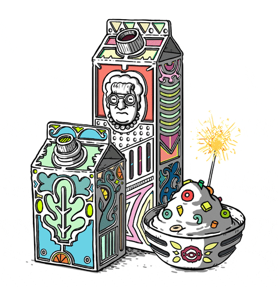
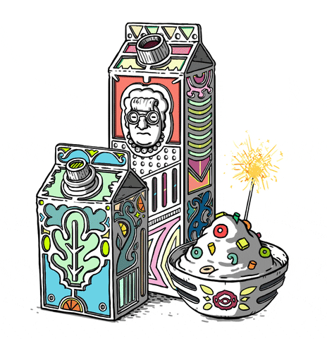

MilkyTech Creations MilkyTech Creations is a collection of modern milk-themed dishes that blend technological innovation with delicious flavors.  Spice Fusion Delight Curry with tofu & chicken for the main ingredients. Tangy Orange Bites Tangy Orange Bites offer a delightful blend of sweet and tangy flavors, providing a refreshing burst with every bite.
MilkyTech Creations MilkyTech Creations is a collection of modern milk-themed dishes that blend technological innovation with delicious flavors. 
Tangy Orange Bites Tangy Orange Bites offer a delightful blend of sweet and tangy flavors, providing a refreshing burst with every bite.